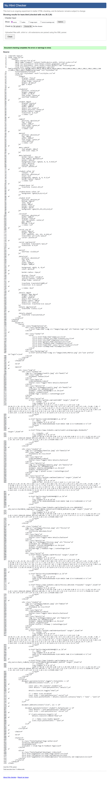
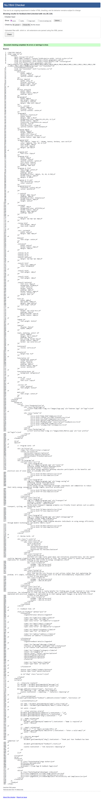
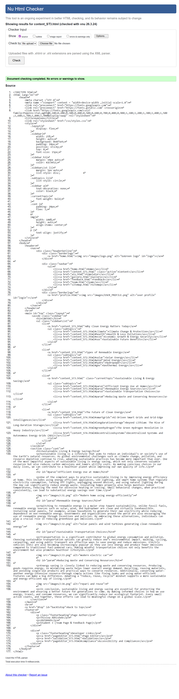

Team Page validation report
The Nu Html Checker results for this page indicated that the overall structure is valid, with no major errors affecting functionality. The report mainly highlighted minor issues such as missing or redundant attributes, small syntax inconsistencies, and a few warnings related to best practices rather than strict errors.
These findings suggest that while the page renders correctly, there is room for refinement—particularly in improving semantic markup and ensuring all elements follow HTML5 standards precisely. Fixing these minor issues would enhance accessibility, maintainability, and cross-browser consistency.
Overall, the validation confirms that the page is technically sound, and the reported issues serve as helpful guidance for polishing the code to a higher standard.

Back to Page Editor page
Include a link back to the corresponding section of the Page Editor.
Feedback Page validation report
The Nu Html Checker report for this page showed that the document is generally well-formed, with no critical errors preventing it from functioning correctly. Most of the feedback consisted of minor warnings and small validation issues, such as missing attributes, unnecessary tags, or slight deviations from recommended HTML5 practices.
These issues do not significantly impact how the page displays, but addressing them would improve code quality and ensure better compliance with web standards. In particular, refining element structure and ensuring consistent use of semantic tags would enhance both accessibility and maintainability.
Overall, the validation results indicate a solid implementation, with only minor adjustments needed to achieve a fully standards-compliant and polished webpage.

Back to Page Editor page
Include a link back to the corresponding section of the Page Editor.
Content Page validation report
The Nu Html Checker results for this page show that the document has no errors or warnings, indicating full compliance with HTML5 standards. This confirms that the code is clean, well-structured, and follows best practices in terms of syntax and element usage.
Achieving a completely error-free validation suggests careful attention was paid during development, particularly in maintaining proper nesting of elements, using appropriate semantic tags, and including required attributes. It also reflects good consistency across the page’s structure and styling.
Overall, this result demonstrates a high-quality implementation, with the page meeting professional standards for web development and requiring no further corrections from a validation perspective.

Back to Page Editor page
Include a link back to the corresponding section of the Page Editor.